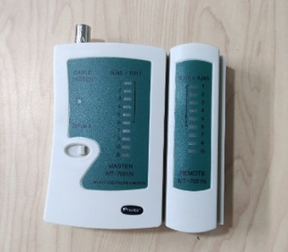
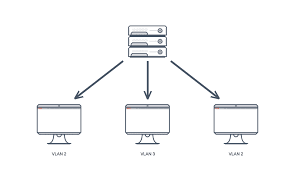

"Alámbrico" se refiere a la conexión de dispositivos mediante cables físicos, como cables de Ethernet, cables telefónicos o cables coaxiales.
A continuación encontrarás las definiciones de las principales palabras y expresiones relacionadas con la asignatura de Sistemas Operativos
Alambrico
Amplificación
Proceso de aumento de la intensidad de la señal lumínica para contrarrestar la atenuación.
.png)
Ancho de banda
Capacidad máxima de datos que una red Ethernet puede transmitir en un período de tiempo dado.

Arquitectura de red
Esta arquitectura o sistema está compuesto por un conjunto de equipos de transmisión, programas, protocolos de comunicación y una infraestructura radioeléctrica que posibilita la conexión y transmisión de datos a través de la red, de esta forma se logra compartir información de manera fiable y eficiente.

ARP
Protocolo utilizado para mapear direcciones IP a direcciones MAC en una red Ethernet.
Atenuación
Pérdida de intensidad de la señal lumínica a lo largo de la fibra óptica debido a la absorción y dispersión.
.jpg)
Broadcasting
Método de comunicación en una red donde un mensaje se envía a todos los dispositivos de la red.
Cable de fibra óptica
Cable compuesto por filamentos de vidrio o plástico que transmiten señales de luz.

Cable de par trenzado
Tipo de cableado comúnmente utilizado en redes Ethernet que consta de pares de cables entrelazados para reducir la interferencia electromagnética.
.jpg)
Condensador
Es un dispositivo capaz de almacenar energía en forma de campo eléctrico. Está formado por dos armaduras metálicas paralelas (generalmente de aluminio) separadas por un material dieléctrico.

Conector óptico
Dispositivo utilizado para unir cables de fibra óptica.

Conectores RJ45
Son como los enchufes que conectan los cables de red a dispositivos como computadoras y routers, estos nos ayudaran a transmitir datos de manera confiable a través de cables Ethernet.

Crimpadora
Es una herramienta que parece una especie de "pinza especial" que se usa para colocar los conectores en los extremos de los cables de red, como los cables Ethernet.
DHCP
El servidor DHCP almacena la información de configuración en una base de datos que incluye lo siguiente: Parámetros de configuración de TCP/IP válidos para todos los clientes de la red. Direcciones IP válidas, mantenidas en un grupo para la asignación a clientes, así como direcciones excluidas.

Dirección MAC
Identificador único asignado a cada tarjeta de red para distinguirla en una red Ethernet.

DNS
DNS corresponde a las siglas en inglés de "Domain Name System", es decir, "Sistema de nombres de dominio". Este sistema es básicamente la agenda telefónica de la Web que organiza e identifica dominios.

Enlace de datos
El conjunto o conjuntos de datos que crea devuelven los datos que desea utilizar en un informe. Antes de poder utilizar o mostrar los datos del conjunto de datos en un informe, primero debe crear los enlaces de datos necesarios

Ethernet
Ethernet es la tecnología tradicional para conectar dispositivos en una red de área local (LAN) o una red de área amplia (WAN) por cable, lo que les permite comunicarse entre sí a través de un protocolo: un conjunto de reglas o lenguaje de red común.

Espectro radial
El espectro radioeléctrico es la parte del espectro electromagnético con frecuencias de 30GHz a 300 GHz. Las ondas electromagnéticas en este rango de frecuencia, llamadas ondas de radio, son ampliamente utilizadas en la tecnología moderna, particularmente en las telecomunicaciones.

Fibra monomodo
Tipo de fibra óptica que permite la transmisión de un solo modo de luz, utilizada en largas distancias.

Fibra multimodo
Tipo de fibra óptica que permite la transmisión de múltiples modos de luz, adecuada para distancias cortas.
Firewall
Dispositivo o software que controla el tráfico de red entre redes Ethernet para filtrar y bloquear paquetes no deseados.
FTP
FTP es el acrónimo de «Protocolo de Transferencia de Ficheros» (en inglés, File Transfer Protocol). FTP es un protocolo que se utiliza para transferir todo tipo de archivos entre equipos conectados a una red, por ejemplo Internet.

Gateway predeterminada
Dirección IP del enrutador utilizado por un dispositivo para enviar datos a redes externas.

http
Una solicitud HTTP es la forma en que las plataformas de comunicación de Internet, como los navegadores web, piden la información que necesitan para cargar un sitio web

https
Versión segura del protocolo HTTP que utiliza cifrado SSL/TLS para proteger la información transmitida entre el navegador y el servidor web.
Inalámbrico
"Inalámbrico" se refiere a la conexión de dispositivos sin la necesidad de cables físicos, utilizando tecnologías de comunicación inalámbrica como Wi-Fi, Bluetooth, infrarrojos o radiofrecuencia.
Ipconfig
El comando ipconfig es una herramienta de línea de comandos utilizada en sistemas operativos Windows para mostrar la configuración de red actual de un dispositivo.
IPv4
Versión más comúnmente utilizada del protocolo IP, que utiliza direcciones IP de 32 bits.
Mainframe

Es un ordenador muy potente diseñado para el procesamiento de datos a alta velocidad con un uso intensivo de datos.
Máscara de subred

Valor numérico utilizado para dividir una red Ethernet en subredes más pequeñas y determinar qué parte de una dirección IP corresponde a la red y qué parte corresponde al host.
Modelo ISO
El modelo Open Systems Interconnection (OSI) es un modelo conceptual creado por la Organización Internacional para la Estandarización, el cual permite que diversos sistemas de comunicación se conecten usando protocolos estándar. En otras palabras, el OSI proporciona un estándar para que distintos sistemas de equipos puedan comunicarse entre sí.

Networking
se refiere a la conexión de dos o más ordenadores, sistemas operativos o dispositivos informáticos, con el propósito de facilitar el intercambio de datos e información.

NCP

Netware Core Protocol: Es un producto cliente-servidor para LAN. Por lo general está conectado a los sistemas operativos Netware.
Núcleo
Parte central del cable de fibra óptica por donde viaja la luz.
PAN
Una red PAN, o Personal Area Network (Red de Área Personal), es una red de dispositivos conectados que está diseñada para cubrir un área muy pequeña, típicamente dentro del alcance físico de una persona
Ping
El comando ping es una utilidad de red utilizada para verificar la conectividad entre dos dispositivos a través de Internet Protocol (IP)

Probador
Basicamente un probador de cables es una herramienta que se usa para asegurarse de que los cables de red.
Puertas de enlace
Es un sistema informático que se sitúa entre redes. Convierten los datos y la información que envía una red a un formato compatible con la receptora.

Rayos gamma
En el contexto de las redes y las comunicaciones de datos, los rayos gamma no se utilizan directamente. Sin embargo, en la tecnología espacial, los rayos gamma pueden afectar los sistemas electrónicos de satélites y naves espaciales, por lo que se deben tener en cuenta al diseñar y proteger estos sistemas para evitar interferencias y daños.

Red cyclades
La red de ordenadores CYCLADES era una red de investigación francesa creada en los primeros años de los 70s. Fue una de las redes pioneras que experimentó con el concepto de conmutación de paquetes y fue desarrollada para explorar alternativas al diseño ARPANET. Sostenía la red local de investigación general

Reflexión interna total
Fenómeno por el cual la luz se mantiene dentro del núcleo de la fibra debido a su ángulo de incidencia.

Revestimiento
Capa que rodea al núcleo y permite que la luz se refleje dentro de la fibra.
.jpg)
Router
Dispositivo de red que dirige el tráfico de datos entre redes informáticas y permite la comunicación entre ellas.

Satélite
En el contexto de las redes y las comunicaciones de datos, los satélites se utilizan para transmitir señales de comunicación, como televisión, telefonía, internet y datos, desde el espacio hasta la Tierra.
Servidor
Computadora o dispositivo que proporciona servicios o recursos a otros dispositivos en una red, como almacenamiento de archivos, correo electrónico, páginas web, etc.
SSL
Protocolo de seguridad que proporciona comunicaciones seguras a través de Internet mediante la encriptación de datos entre el cliente y el servidor.
Switch
Dispositivo de red que conecta múltiples dispositivos Ethernet y dirige el tráfico de red basado en direcciones MAC.

Tarjeta de red
Dispositivo de hardware que permite que una computadora se conecte a una red Ethernet.

Telégrafo
El telégrafo fue la primera tecnología que literalmente permitió la transmisión de datos, y el telégrafo eléctrico hizo uso de la señal eléctrica por primera vez con el mismo propósito. Hoy día puede parecer extraño, pero la habilidad de acelerar radicalmente la transmisión de datos no fue apreciada inmediatamente.

TCPIP
/Internet Protocol. Posibilita que los dispositivos conectados a internet se comuniquen entre sí en varias redes.

TCP
Transfer Control Protocol consiste en un acuerdo estandarizado sobre el que se realiza la transmisión de datos entre participantes de una red informática.
Topología
Rama de las matemáticas que trata especialmente de la continuidad y de otros conceptos más generales originados de ella, como las propiedades de las figuras con independencia de su tamaño o forma.

Tráfico
Flujo de datos que se transmite a través de una red Ethernet.
VLAN
Red lógica que agrupa dispositivos de manera lógica independientemente de su ubicación física en la red.
VPN
Red privada virtual que utiliza una red pública, como Internet, para conectar dispositivos de forma segura y privada a través de cifrado.

WAN
Red de computadoras y dispositivos interconectados a través de una amplia área geográfica, como ciudades, países o continentes.
Wi-Fi
Tecnología que permite la conexión a una red Ethernet de forma inalámbrica.

WWW
La World Wide Web, comúnmente conocida como WWW, W3, o la Web, es un sistema interconectado de páginas web públicas accesibles a través de Internet. La Web no es lo mismo que el Internet: la Web es una de las muchas aplicaciones construidas sobre Internet.